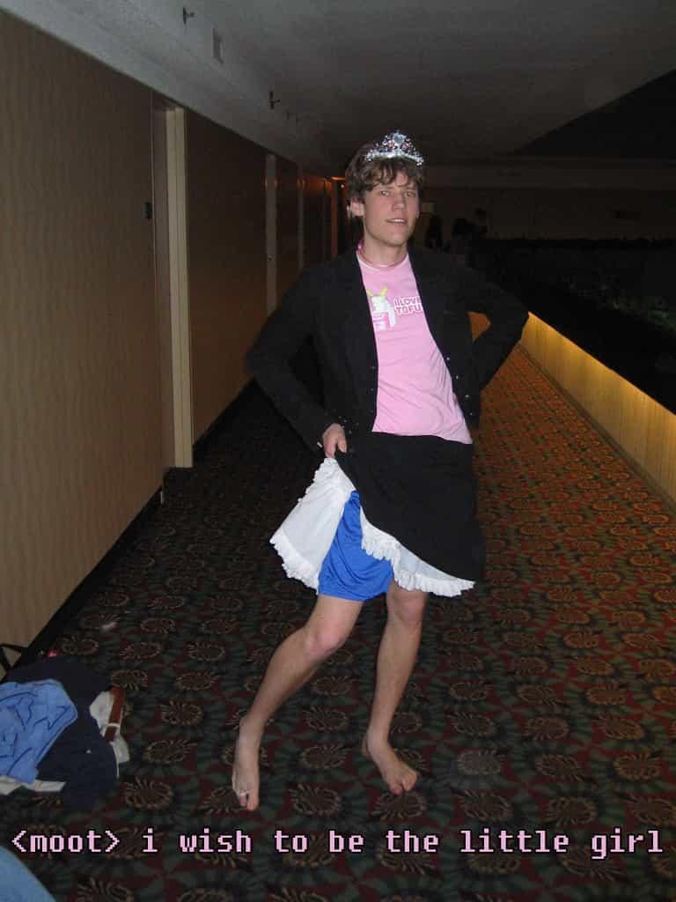

< < < Back
A New Hope: An Interview With The Founder Of 8chan – Return Of Kings
This past month or so has been crazy for people who are into the video game subculture. A woman who couldn’t practice monogamy unearthed a cabal of game industry people working like the KGB to stop real freedom of opinion in gaming culture. We found the little hole and discovered the catacombs the size of Canada underneath our foundation.
Many sources ignored this web of nepotism and cronyism, but only one journalistic website covered the story properly. Return Of Kings published critical pieces of the broken mafia (a term that describes social justice warriors better). Here are some of the examples of the writing done so far. This one details the beginning of the scandal. This one details the game industry’s silence about a game developer having sexual relationships with people who review and publish games. There are also 2 articles talking about Anita Sarkeesian’s death threats and how the authors of those pieces don’t believe her.

Even Chris “Moot” Poole, founder of 4chan, caved in to feminists and removed discussion of Gamergate. His website 4chan, for all the good and bad, was a literal bastion of free speech. You could have feminists and red pillers on the same website talking things out. However, the same guy who made a career talking about anonymity and free speech buckled down to feminism.
People were worried until a wheelchair-bound admin from New York decided to open up his small chan to the public to discuss this issue, a chan he founded to let the actual users have power. People are allowed to make sub forums about any topic on the website, as long as it’s legal in the USA. He allowed #GamerGate discussion on his forum when it wouldn’t have been advantageous for him. He increased his server hosting fees by 500% and the website is still growing.
I, redpiller1985, was able to get an interview with him. These are his unabridged words with no alterations. ROK is about journalistic integrity and respect. If you want to hear interviewers write fables lightly based on the interview, Gawker media would be more suitable for you.
Here is my interview with Frederick Brennan, the founder of 8chan.co. I made up 10 questions and sent it to him. Mr. Brennan is a busy man and this was one of the only ways to conduct the interview. He wrote the answers in one go.
—
Where do you come from and how was your early childhood?
I was born in Albany, upstate New York. My childhood was pretty unremarkable, it was full of a lot of videogames.
How was it like living with your disablity?
It’s hard for me to answer this question because I don’t know what it would be like to live without having a disability.
The feminist media implies that handicapped people are doomed forever to live on the dole and be lazy. What did you do to overcome that?
I learned a skill that is useful in the real world. Radical feminists normally are very averse to learning skills, which is why they have a hard time getting a job with their degrees. I would say that having a women’s study degree and no useful skills is a fate worse than being a disabled person that knows how to computer program.
What websites and media influenced you to go ahead with 8chan?
4chan mostly. I also took the subreddit system from Reddit, but without any of the downvoting, user accounts, karma or other things that create identity there. I always thought that the way board creation was decided on 4chan was too authoritarian, so this was a natural fit for this kind of site.
What is the purpose of 8chan?
The purpose of 8chan is to become an imageboard where free speech is the highest priority. Its purpose is to take power away from people like moot and his moderation team and put it into the hands of the users. The users decide which boards will exist and with what rules, which threads will prosper and what to talk about.
I first created 8chan.co when I saw that people on 4chon.net’s /meta/ board were constantly asking an uncaring admin to make them new boards. This is a lot like 4chan, except on 4chan we can’t see these requests because the moderation there is so afraid of criticism they closed down the /q/ feedback board.
I wondered what it would be like if anyone who wanted their own imageboard could make one, and then founded 8chan.co. The results so far speak for themselves.
How are you dealing with the growth?
I have upgraded the server six times in the last week, and even more upgrades are being planned. I have also open sourced the code so that interested developers can help me write the features they most want to see on 8chan.co.
Why have you been one of the only few not to be beholden by the broken mafia (SJW)?
I am not sure, but I have some theories. So far, no SJWs have contacted me about 8chan.co – it could be because they believe that due to my disability it would be horribly ironic of them. They have attacked and doxed people who were much less active in #gamergate, so that could very well be it.
Any backlash from your local community over your views and website?
None yet. However, I would not let any backlash from freelance clients stop me from running 8chan.co.
What does the future hold for you?
I hope that, in partnership with 2channel, the largest discussion board in the world, I can make 8chan.co the best site for free discourse on the globe.
—
Frederick shows that men don’t have to be casanovas or have a cult of personality to affect the world in a positive manner. I could write a dialogue about how inspiring he is or shift it to narcissist victim circlejerking. Instead, I just want to say that the content of Frederick’s character is evident to see.
Read More: The Playboy Interview With George Carlin


{kind=link}
{kind=link}